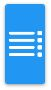

Nella pagina “Programmi” è possibile gestire la lista di programmi da eseguire. È possibile definire l’ordine dei programmi, inserire pause e inserire alcuni comandi come lo spegnimento soffio.
Comandi della pagina Programmi
Carica Carica i programmi selezionati dalla lista.
Aggiorna lista Aggiorna la lista dei programmi disponibili.
Rimuovi Rimuove l’elemento selezionato dalla lista “Programmi Robot”.
Pausa e spegnimento vuoto Inseriscono, rispettivamente, una pausa e un comando di spegnimento vuoto subito dopo l’elemento selezionato nella lista “Programmi Robot”.

Gestione produzione in serie Apre la finestra per la gestione della produzione in serie.
Visualizza setup Visualizza il file di setup in base ai programmi caricati.
Salva programma Salva il programma.
Conferma programma Conferma il programma e apre la pagina “Esecuzione”.
Parametri CNC Apre la finestra di modifica di parametri CNC.